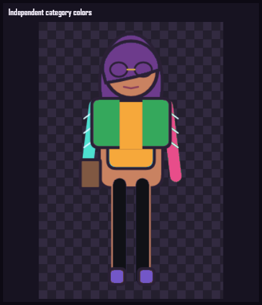
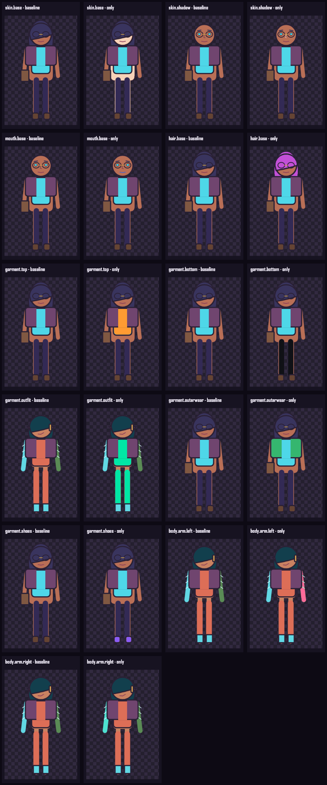

TASK-019 · Slot-scoped palettes
Black pants.
Green jacket.
Skin, hair, top, bottom, outfit, outerwear, shoes, left arm, and right arm now have stable, independent color identities in recipes, rendering, and Studio controls.
Simultaneous contrast proof
Every visible category can differ

One role at a time
Isolation remains local
Each baseline/change pair differs only in the labeled authored pixels. Legacy broad keys remain readable and project into the new roles only when an explicit new value is absent.

Accepted Task 019 checks
- Black bottoms and green outerwear coexist.
- Top, shoes, skin, and hair remain independently colorable.
- Left/right replacement arms can use different colors.
- Changing one control affects only its named category.